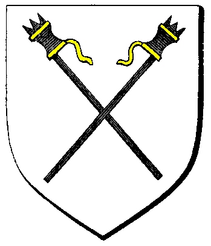

| Übersicht,
Anschläge und Stammtisch (RPG) |
|
Die große Tombola
|
Lyra Callionymus
  |
Ein Los auch für mich *wedelt mit etwas Segeltuch herum*
Lyra Callionymus,
Anführerin der glorreichen Nation "Freie Walfänger"
Zur 12. Stunde am 2.Saatmond im Jahre 447 |
05.07.11 14:14
 |
|
| Lesaonar Ag’Duskryn (RIP) |
Nun das könnte Spaß machen, ich nehme auch ein Los!
Edler Lesaonar Ag’Duskryn,
Vorsteher von Cair Paravel
Zur 18. Stunde am 3.Saatmond im Jahre 447 |
05.07.11 21:10
|
|
| Tyrion Throrfilas (RIP) |
Ich möchte auch eines
Weiser Tyrion Throrfilas,
Vorsteher von Valenór
Zur 7. Stunde am 4.Saatmond im Jahre 447 |
06.07.11 0:14
|
|
| Marea (RIP) |
*meld*
Fürstin Marea,
Vorsteherin von Dîn Elenath,
Anführerin der glorreichen Nation "Volk von Alandur",
Ehefrau des ehrenwerten Merrik Mercadur
Zur 9. Stunde am 11.Saatmond im Jahre 447 |
07.07.11 15:59
|
|
someone
  |
das klingt doch viel versprechend!
*sich auch mal einträgt*
Edler someone,
Vorsteher von Lorderon,
Anführer der glorreichen Nation "Schattenschwingen"
Zur 13. Stunde am 11.Saatmond im Jahre 447 |
07.07.11 17:00
|
|
Tar Aldarion
  |
Hmm, na warum nicht. Ich nehm auch eins.
Wächter Tar Aldarion,
Vorsteher von Feste Urvanfels
Zur 16. Stunde am 11.Saatmond im Jahre 447 |
07.07.11 17:38
|
|
| Celebrimbor (RIP) |
Ich hätte gerne auch ein paar Lose!
Celebrimbor
Zur 21. Stunde am 11.Saatmond im Jahre 447 |
07.07.11 18:44
|
|
Colt
  |
ich würde auch eines nehmen sofern noch lose übrig sind
Ritter Colt,
Vorsteher von Tanelorn
Zur 22. Stunde am 11.Saatmond im Jahre 447 |
07.07.11 18:55
|
|
| Menárya Edhel (RIP) |
Ich möchte auch gern mein Glück probieren.
Edle Menárya Edhel,
Vorsteherin von Schnjokoladia
Zur 5. Stunde am 12.Saatmond im Jahre 447 |
07.07.11 20:40
|
|
| Kai Ying Liao (RIP) |
Eine interessante Möglichkeit. Ich werde partizipieren und das Beste erhoffen.
Kai Ying Liao
Zur 6. Stunde am 16.Saatmond im Jahre 447 |
08.07.11 19:21
|
|
| Vantress (RIP) |
*Kommt noch einmal ans Anschlagbrett zurück und liest sich die Teilnehmer durch.*
Mhhh.. Sind ja schon recht viele. Aber wo soll die Tombola eigentlich stattfinden?
*Grübelt kurz und beschließt eine Taube an Heindal zu schicken...*
Veteran Vantress,
Vorsteher von Caras Rhawiant
Zur 21. Stunde am 62.Saatmond im Jahre 447 |
19.07.11 16:25
|
|
Olivia v. glänzenen Wolfstern
  |
*laut vorliest"
".. Am 84. Saatmond im Jahre 447 wird eine Hand erlesene Losfee die Ziehung vollziehen .."
da ist ja noch ein wenig Zeit,
ich hätte auch gerne eines der Lose
Weise Olivia v. glänzenen Wolfstern,
Vorsteherin von Wolfsstern,
Ehefrau des ehrenwerten Elrohir v. glänzenen Wolfstern,
Feuerwölfin der Nation
Zur 22. Stunde am 62.Saatmond im Jahre 447 |
19.07.11 16:47
|
|
| Fadia Butternase (RIP) |
Achtung!Achtung!Achtung!
Bis zur 9. Stunde am 76. Saatmond im Jahre 447 könnt ihr euch noch melden, danach sind alle Lose vergeben!
Fadia Butternase,
Grabwächterin der Lagerinsel
Zur 14. Stunde am 63.Saatmond im Jahre 447 |
19.07.11 20:23
|
|
| Melina Melandor (RIP) |
*sich meldet bevor es zu spät ist*
Veteranin Melina Melandor,
Vorsteherin von Benettons Hoffnung,
Ehefrau des ehrenwerten Rojan Bierfass
Zur 22. Stunde am 64.Saatmond im Jahre 447 |
20.07.11 3:49
|
|
Beliong Belibril
  |
*sich auch meldet*
Ritter Beliong Belibril,
Vorsteher von Festung Winterstern
Zur 19. Stunde am 65.Saatmond im Jahre 447 |
20.07.11 8:46
|
|
| Juin Eishauch (RIP) |
*Kurz voebi kommt*
Nehme auch sehr gerne eines.
Lady Juin Eishauch,
Ep Agathos
Zur 6. Stunde am 66.Saatmond im Jahre 447 |
20.07.11 11:20
|
|
| Meretán Exitus (RIP) |
Ein kleiner, in blau gekleideter Wichtel erregt Eure Aufmerksamkeit
Es wurden nun alle Lose verteilt. Wir hoffen, dass bei der Verteilung alles gut gelaufen ist. Wir freuen uns jetzt schon auf diesen tollen Abend!
So schnell wie er vor Eurer Nase aufgetaucht ist, hat er sich auch wieder Eurem Blick entzogen
((Ich möchte auch hier zur Sicherheit die OOC-Daten durchgeben.
Die Lotterie findet diesen Sonntag, dem 22.07.11, statt, ab 20:00 Uhr. Es läuft während der Scherbenwelten-Radiosendung bei www.ur-radio.de auf dem Mainstream.
Bitte dabei zuhören! Und bitte auch im IRC-Chan #scherbenradio einfinden.
Dankö!))
Meretán Exitus,
Ehemann der reizenden Sareia Exitus
Zur 7. Stunde am 77.Saatmond im Jahre 447 |
23.07.11 1:02
|
|
| Meretán Exitus (RIP) |
((AAAAACH 24.07.!!^^))
Meretán Exitus,
Ehemann der reizenden Sareia Exitus
Zur 17. Stunde am 78.Saatmond im Jahre 447 |
23.07.11 9:00
|
|
| Manjana Cane (RIP) |
*(sinniert)Wie kann man hier den ganzen Lostopf auf einmal stehlen, ohne Diebe werde ich da wohl keine Chance haben*
Ich möchte auch möglichst viele Lose haben!
Lady Manjana Cane,
Vorsteherin von Wichtelhausen
Zur 23. Stunde am 78.Saatmond im Jahre 447 |
23.07.11 10:32
|
|
| Beachy (RIP) |
ich hätte auch gerne Lose...
Beachy
Zur 3. Stunde am 79.Saatmond im Jahre 447 |
23.07.11 11:24
|
|
| Cordelia deLor (RIP) |
hmmm, zeit verpasst. ich hatte wohl zu viel die ohren in der letzten zeit *das gesicht verzihet und von dannen zieht*
Lady Cordelia deLor,
Ehefrau des ehrenwerten Hawk deLor
Zur 4. Stunde am 79.Saatmond im Jahre 447 |
23.07.11 11:40
|
|
| Meretán Exitus (RIP) |
Werte Lady Cane und Herr Beachy,
leider brauchen wir bei soviel Ansturm eine gewisse Vorbereitungszeit und daher gab es auch die angesetzte Anmeldefrist. Somit können wir Euch leider nicht mehr an der Tombola teilnehmen lassen. Doch wir würden uns freuen, wenn ihr dem Spektakel dennoch folgt.
((Also IRC und Radio))
Meretán Exitus,
Ehemann der reizenden Sareia Exitus
Zur 18. Stunde am 83.Saatmond im Jahre 447 |
24.07.11 13:13
|
|
someone
|
Die Tombola war beeindruckend, die preiße nicht nur von unerwartet hohem materiellem wert, sondern haben sich auch in ihrer liebevollen zusammenstellung und verpackung nur selbst übertroffen und die musikalische untermauerung und angenehme gesellschaft rundeten die sache zu einem regelrechten fest ab.
hut ab, vor den veranstaltern und den edlen spendern, welche dieses specktakel ermöglichten, es wird mir unvergessen bleiben!
Edler someone,
Vorsteher von Lorderon,
Anführer der glorreichen Nation "Schattenschwingen",
Trainer und Spieler d. Lorderons Lerderschützen
Zur 5. Stunde am 89.Saatmond im Jahre 447 |
25.07.11 19:48
|
|
| Vantress (RIP) |
*Kommt zurück auf den Marktplatz und hört die Worte someones*
Da kann ich dir nur beipflichten. Es waren nicht nur viele alte Freunde am Tempel, ich hatte auch das Privileg einen neuen zu finden.
Ein herzliches Dankeschön an die Wichtelmusikmacherwichtelei, die uns ein schönes Fest bereitet haben.
Veteran Vantress,
Vorsteher von Caras Rhawiant
Zur 10. Stunde am 89.Saatmond im Jahre 447 |
25.07.11 21:07
|
|
| Chevonne Siobhan (RIP) |
Ja, das war eine tolle Veranstaltung.
Baronesse Chevonne Siobhan,
Vorsteherin von Sigil,
Anführerin der glorreichen Nation "Orden der Sinne"
Zur 23. Stunde am 1.Blumenmond im Jahre 447 |
26.07.11 11:11
|
|
Olivia v. glänzenen Wolfstern
|
*aus einem Riesenberg Gartenzwergen hervur schaut*
ja, es war wahrlich ein tolles Erlebnis, besonders wenn man die beiden Trostpreise zieht, getreu dem Motto "Pech im Spiel, Glück ......"
;o)
Weise Olivia v. glänzenen Wolfstern,
Vorsteherin von Wolfsstern,
Ehefrau des ehrenwerten Elrohir v. glänzenen Wolfstern,
Feuerwölfin der Nation
Zur 1. Stunde am 2.Blumenmond im Jahre 447 |
26.07.11 11:49
|
|
| James C. Barbedos (RIP) |
Ein kostenloser Bordellbsuch? mhh das nächste mal sollte ich mir doch die Zeit nehmen und mitmachen.
Sir James C. Barbedos
Zur 2. Stunde am 2.Blumenmond im Jahre 447 |
26.07.11 11:54
|
|
Wolf ni Volon
  |
Wieder eine tolle Veranstaltung der Wichtelmusikmacherwichtelei ^^
Vielen lieben Dank
Ritter Wolf ni Volon,
Vorsteher von Arboretum Gondoria
Zur 3. Stunde am 2.Blumenmond im Jahre 447 |
26.07.11 12:04
|
|
Icke wieder
 |
...Glück durch Hiebe!
Und mein Beileid an die Verstorbene.
Graf Ottor Waefre,
Vorsteher von Oneiros
Zur 15. Stunde am 2.Blumenmond im Jahre 447 |
26.07.11 14:57
|
|
| Ariana (RIP) |
Ich habe auch meinen Spass gehabt, auch wenn ich nicht so genau wusste, was ich mit dem einem besonderen Teil anfangen sollte *schmunzelt*
Aber ich denke, nun hat es seine Erfüllung gefunden
*schaut zu olivia und grinst frech*
Ritterin Ariana,
Vorsteherin von Nín Andúne,
Anführerin der glorreichen Nation "Heria na Nautha",
Verlobte des ehrenwerten Treyno
Zur 15. Stunde am 6.Blumenmond im Jahre 447 |
27.07.11 13:26
|
|
Elrohir v. glänzenen Wolfstern
|
*lol* ich glaub, ich weiß, worum es sich handelt ;)
Baron Elrohir v. glänzenen Wolfstern,
Vorsteher von Wolfsmond,
Anführer der glorreichen Nation "Sternenwölfe",
Ehemann der reizenden Olivia v. glänzenen Wolfstern
Zur 10. Stunde am 7.Blumenmond im Jahre 447 |
27.07.11 17:43
|
|
| Ariana (RIP) |
Das will ich doch mal stark hoffen, El *grinst*
Ritterin Ariana,
Vorsteherin von Nín Andúne,
Anführerin der glorreichen Nation "Heria na Nautha",
Verlobte des ehrenwerten Treyno
Zur 7. Stunde am 8.Blumenmond im Jahre 447 |
27.07.11 22:43
|
|
Übersicht,
Anschläge und Stammtisch (RPG)
|